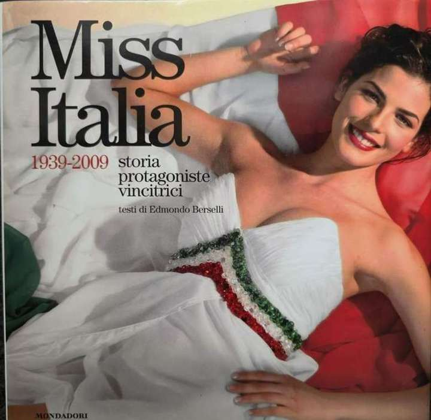
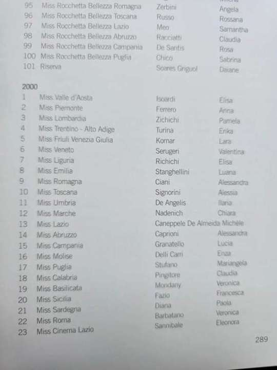
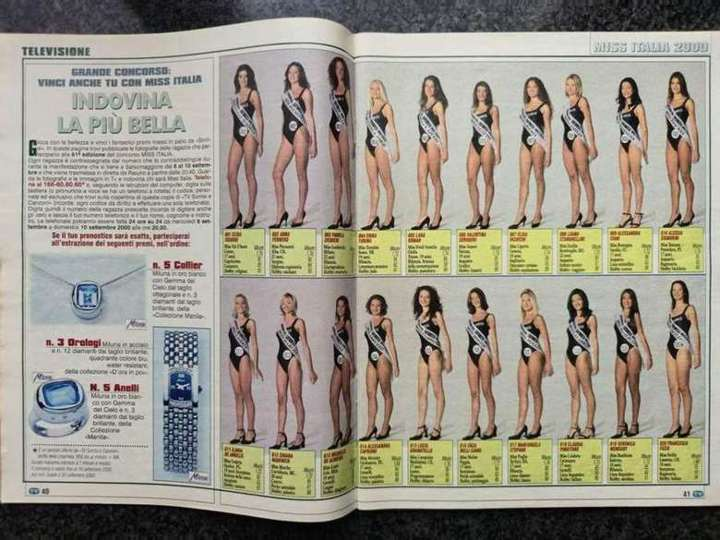
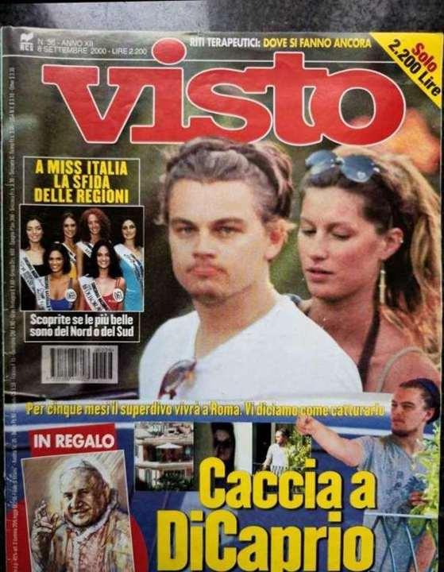
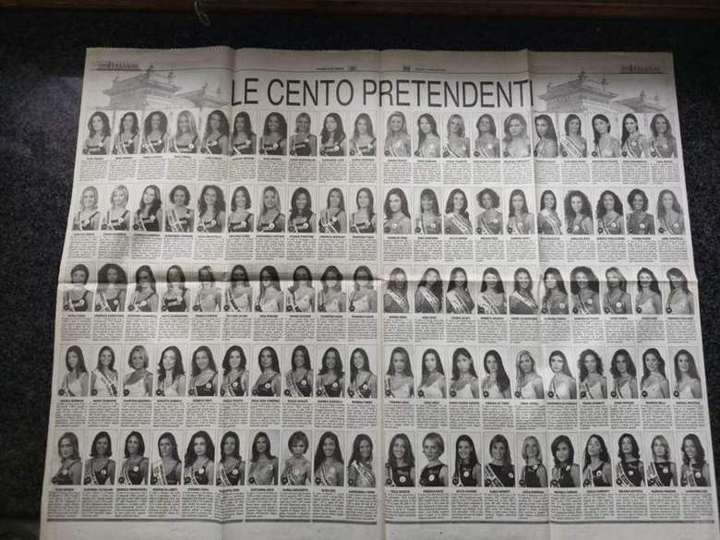
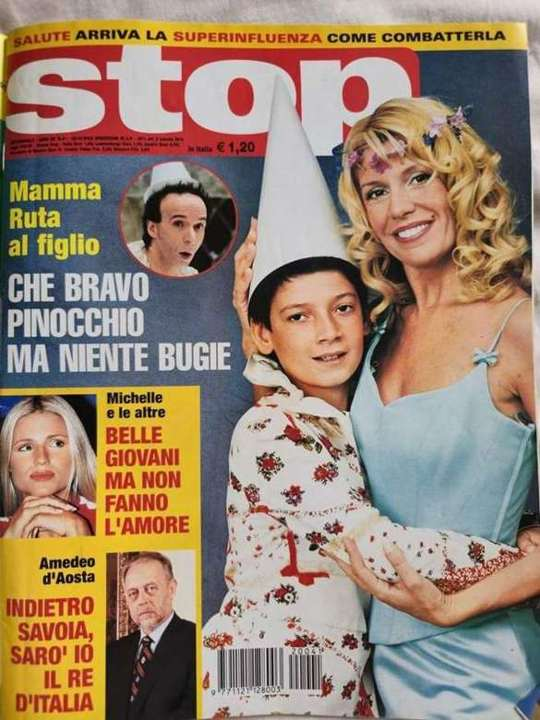
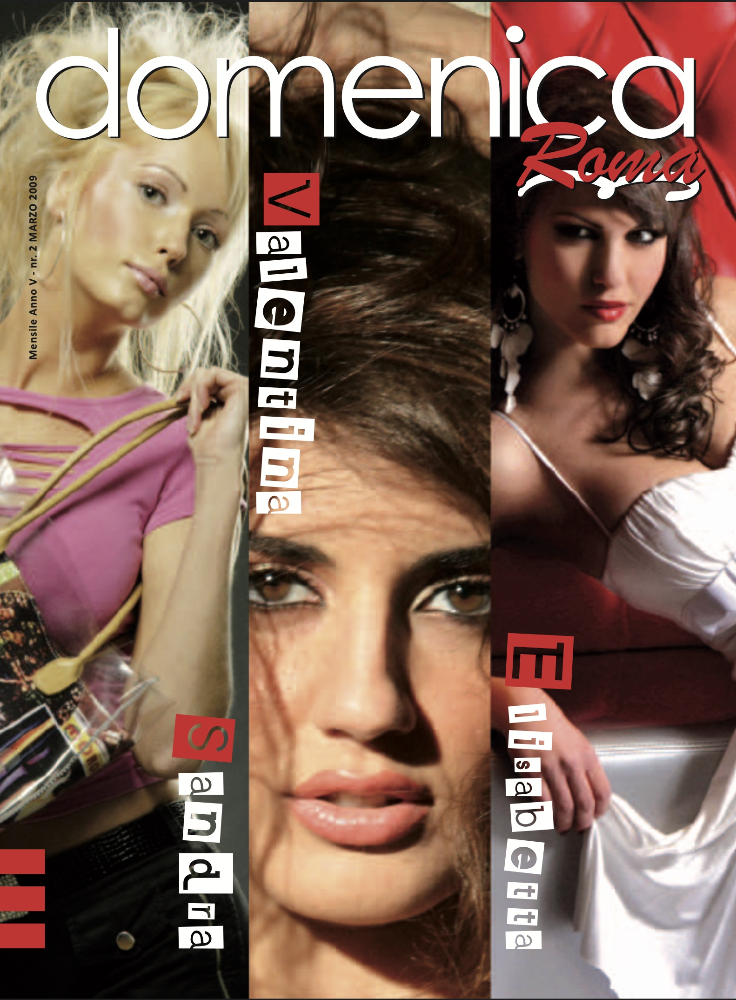
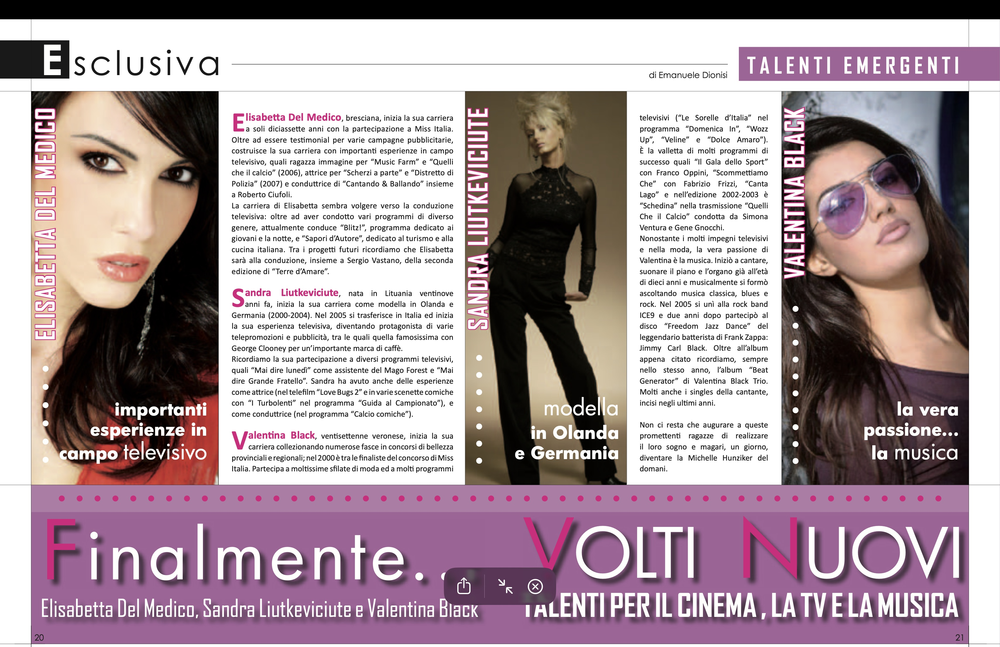

Long before she was releasing singles as Valentina Black, she was appearing — under her birth name, Valentina Serugeri — in some of Italy's best-known television weeklies, national newspapers and, eventually, a Mondadori book.
The Mondadori Book
In 2009, Arnoldo Mondadori Editore published "Miss Italia. 1939/2009: storia, protagoniste e vincitrici," written by Edmondo Berselli (ISBN 978-88-370-6888-2) — an official history of the Miss Italia pageant. Its "Albo d'Oro" (official roster), page 289, lists the year 2000 regional titleholders; entry 6 reads "Miss Veneto — Serugeri Valentina." Mondadori's own Libri Illustrati marketing department confirmed the listing directly to her in a letter dated 9 September 2009.


TV Sorrisi e Canzoni, Visto and Gazzetta di Parma
The same Miss Veneto title made the pages of TV Sorrisi e Canzoni, one of Italy's biggest television and entertainment weeklies. Issue n.37 (10–16 September 2000) put the Miss Italia 2000 regional finalists on its cover under the headline "Le foto delle 100 finaliste: Miss Italia 2000." Inside, in a feature titled "Indovina la più bella," she was listed as entry 006: "Valentina Serugeri, Miss Veneto, Verona, 18 anni."


The same regional heat was picked up elsewhere in the national press that week. Visto ran its own roundup of the "sfida delle regioni" — cover story on issue n.36 (8 September 2000) — naming her among the Veneto candidates in a piece titled "Inseguono la Zanin." Days earlier, Gazzetta di Parma had published "Le Cento Pretendenti," profiling the hundred contestants heading into the national final at Salsomaggiore Terme.


The final itself was broadcast by RAI International. Screen captures of that broadcast — reposted years later on Facebook — show the crowd of finalists on the Salsomaggiore stage and the crowning moment of the same pageant cycle.
Backstage at RAI's "Quelli Che Il Calcio"
Through the 2002/2003 season, she was one of the "Schedine" on Quelli Che Il Calcio, the long-running RAI variety show hosted that season by Simona Ventura — documented by a handwritten period photo label ("2002/2003 Milano – Quelli che il calcio – RAI") and backstage snapshots with guests including Craig David, Milly Carlucci and Robbie Williams. L'Arena covered it directly in "Schedina senza veli" (20 December 2002, Spettacoli, p.45, by Chiara Tajoli), running the same Robbie Williams photo and noting she had "conquistato la fascia di miss Veneto" two years earlier. National weeklies Stop (Anno 56° n.41, 18 October 2002) and Eva Tremila Express (n.3, 17 January 2003) covered the "Schedine" as a group, including a 2003 horoscope special and a "Le magnifiche 9" feature naming all nine cast members.


"Volti Nuovi" and the Full TV Résumé
In March 2009, national weekly Domenica Roma (Anno V, n.2) put her on the cover alongside Elisabetta Del Medico and Sandra Liutkeviciute for a two-page feature by Emanuele Dionisi, "Finalmente... Volti Nuovi, talenti per il cinema, la TV e la musica." The profile — independently corroborating credits already noted elsewhere in the archive — lists her television work by name: Domenica In, Wozz Up, Veline, Dolce Amaro, Il Galà dello Sport, Scommettiamo Che, Cantalago, and her season as a "Schedina" on Quelli Che Il Calcio (2002–2003). The same piece traces her music beginnings — piano and organ from age 10, the band ICE9 in 2005, "Freedom Jazz Dance" with Jimmy Carl Black, and Beat Generator.


From Regional Pageants to the Music Pages
Her name kept surfacing in the papers over those same years — L'Arena reported her as the winner of the "Miss Garden Circus" sash at a Desenzano heat in September 2001, and Corriere del Veneto named her among six finalists in a "Miss dei Mondiali di Ciclismo" contest judged by Giovanni Rana, Francesco Moser and Fabio Testi in May 2004, after she topped an earlier qualifying round that March.
By the end of that decade, the coverage had shifted from pageants to music. L'Arena's Spettacoli pages tracked her early live dates as a singer and organist — "Valentina, la bellezza del rock" in early 2009, then "Miscela di soul e rock in stile Valentina Black" in January 2010, previewing a show at Majakovskji in Verona and the album then in progress, 4 U, and recapping her recording work with Bruno Marini and with Jimmy Carl Black — drummer for Frank Zappa's Mothers of Invention — on the track "Freedom Jazz Dance."
More recently, in 2024, she was a guest at Music Week's Women in Music Awards in London, a UK music-industry gala backed by Spotify, SoundCloud and UK Music — a long way, on paper, from a regional Miss Veneto listing in a 2000 TV weekly, and part of the same continuous thread the press has followed for over two decades.
The full scans behind every citation above — mastheads, dates and page numbers included — are kept in the Press Archive.